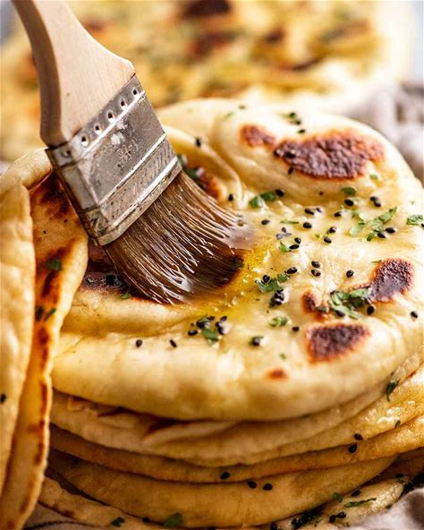

First slide label
Some representative placeholder content for the first slide.

Second slide label
Some representative placeholder content for the second slide.

Third slide label
Some representative placeholder content for the third slide.
About Me
 love Indian food!
love Indian food! I’m SHILPA. I love running, cooking, and curling up with a good book! Here you’ll find simple and delicious recipes that you can make in 30 minutes or less.
Recepies
1.Butter Nan
Incredients
- teaspoon Rapid Rise Yeast (instant/Note 1)
- ½ cup Warm Tap Water (~ 40 ° C/105 F in temperature)
- 1 tablespoon White Sugar
- 2 tablespoons Milk (full fat, low fat ok too)
- 1 ½ tablespoons Whisked Egg (at room temp, around 1/2 an egg, Note 2)
- ½ teaspoon Salt (cooking/kosher)
- 1 ¾ cups Bread Flour (or all-purpose/plain, Note 3)
- 30 grams Unsalted Butter (or ghee, melted, Note 4)
- 30 grams Butter (or ghee, melted, Note 4)
- 1 Small Garlic Clove (for Garlic Butter option, Note 5)
- add Nigella Seeds
- add Cilantro (Coriander/finely chopped)
- 6 Cheese (shredded, for cheese naan, Monterey Jack, cheddar, tasty, colby, anything that melts, shred yourself, Note)
Directions
Activate the Yeast: In large bowl, whisk together the active dry yeast, warm water, and sugar and let sit until frothy.
Build the Dough: Next, stir in milk, egg and salt to the yeast mixture. Slowly, add in the all-purpose flour. Knead for 6 to 8 minutes by hand on a lightly-floured surface or in a stand mixer with a dough hook.
- the sugar solution is simmering. Stir at intervals.
- Allow the Dough to Rest: Pop the dough in a bowl. cover with a plastic wrap, and allow the dough to rise for about an hour.
Shape the Naan: Next, split the dough into equal portions. Roll them into balls and set them aside on a well-floured tray. Cover them with a clean kitchen towel and let rise for at least 15 minutes. On a lightly floured surface, roll out the pieces into ovals.
Keep the heat over medium. To avoid burning your naan, keep the heat of the skillet over medium. If you experience any sticking, grease the pan with a little butter or ghee in between each naan.
Mince the Garlic: Next, mince 2-3 cloves of garlic.
Melt the Ghee: Then, melt 1/2 cup of ghee in a small bowl in the microwave. Whisk in the chopped herbs and garlic.
Brush the Naan: Once you pull the naan out of the skillet, immediately brush the tops with your garlic-herb ghee or butter. Yum!
 - Cauliflower - 1 cup cubed pieces
- French beans - 1 cup 1
- Carrot - 1 cup cubed pieces
- Broccoli - 1 cup cubed pieces
- Potato - 1 cup cubed pieces
- Green peas/motorshuti - 1/2 cup
- Capsicum yallow - 1/2 cup cubed pieces
- Onion - 1/4 cup + 1/4 cup chopped
- Green chili - 1 piece
- Tomato - 1 cup chopped
- Fresh Coriander leaves - 1/4 cup chopped
- Cashew nut - 4-5 pieces
- Grated coconut - 3 tablespoon chopped
- Ginger paste - 1 teaspoon
- Garlic paste - 1 teaspoon
- Cumin paste - 1/2 teaspoon
- Ground turmeric - 1/2 teaspoon
- Red chili cpowder - 1 teaspoon
- Coriander powder - 1/2 teaspoon
- Garam masla powder - 1 teaspoon
- Lemon juice - 1 tablespoon
- Sugar - 1 teaspoon
- Oil - 1/4 cup
Boil the all vegetables until soft. Keep aside.
Heat two tablespoon oil in a pan, add 1/4 cup chopped onion and fry till soft.
Add chopped tomato, cashew nut, grated coconut and coriander leaves.
Cook until soft.
Let then cool.
Heat remaining oil in a pan.
Add remaining chopped onion and fry until soft.
Now add ginger-garlic paste, cumin paste, coriander powder, red chili powder, turmeric powder and garam masla powder along with two tablespoon water to remove burning spices.
Saute' for a minute.
Now mix grind spices and mix well.
Then add boiled vegetables, sugar and mix with gravy gently.
Add some water if you need.
Cook for 2-3 minutes.
Add lemon juice and remove from heat.
Serve with rice or ruti , naan or parata.
- Butter - 100 gram
- sugar - 1 & 1/4 cup (250 gram)
- egg - 2 large
- cocoa powder light - 2 tbs
- salt - 1 tsp
- baking soda - 1 tsp
- vinegar - 1 tsp
- flour/all Purpose Flour/Maida - 2 & 1/4 cup (270 gram)
- salted butter - 200 gram soft
- icing sugar - 3/4 cup
- ice cool water - 1/4 cup
- vanilla essence - 1 tsp
- cream cheese spread - 1/4 cup (optional)
pre-heat your oven into 170 degree c for 10 minutes.
beat the butter and sugar until well combined. add the eggs one at a time beating after each edition.
Stir in the food color, cocoa, salt, baking soda, and vinegar.
beat in the flour alternately with the buttermilk or yogurt milk mixture.
transfer the 1/2 of the batter into a greased 8 inch baking pan.
bake for 25 minutes.
remove the cakes from the oven and allow them to cool for 10 minutes before turning.
beat salted soft butter for two minutes.
add icing sugar and beat with ice cool water until light and fluffy.
add vanilla essence and cream cheese. Adjust the consistency of the frosting as needed by adding more sugar or water.
When the cake is cool, slice each layer horizontally, to make a total of four layers.
Spread each layer with frosting, stacking them as you go.
We like to show off the lovely contrasting colors of this cake by frosting only the top, not the sides.
slice and serve cool or room temperature.
2.Mix vegg curry
Ingredients
VEGETABLES
FOR GRIND INGREDIENTS:
Other ingredients:
Instructions
Preparation:
Method:
Red Velvet Cake With Frosting
Incredients
For frosting:
Instructions:
Frosting:
videos
1.Butter NanButter Naan is a delicious Indian flatbread made from all-purpose flour, oil, and milk. It’s crisp on the outside and soft and pillowy on the inside. Typically, it’s served with gravies like butter paneer masala or dal makhani.
2.Mix veg curryMix vegetable curry is a delightful dish made with a medley of vegetables, spices, and herbs. Here are a couple of recipes you might enjoy:
3.Red velvate CakeRed velvet cake is traditionally a red, crimson, or scarlet-colored layer cake, layered with ermine icing. Traditional recipes do not use food coloring, with the red color possibly due to non-Dutched, anthocyanin-rich cocoa, and possibly due to the usage of brown sugar, formerly called red sugar.